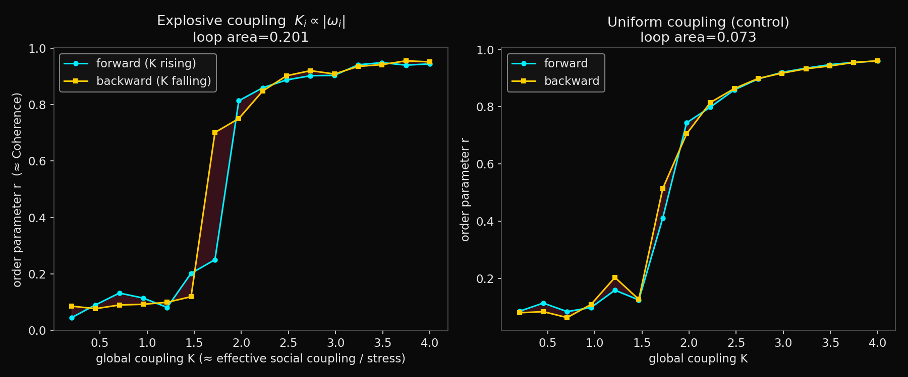
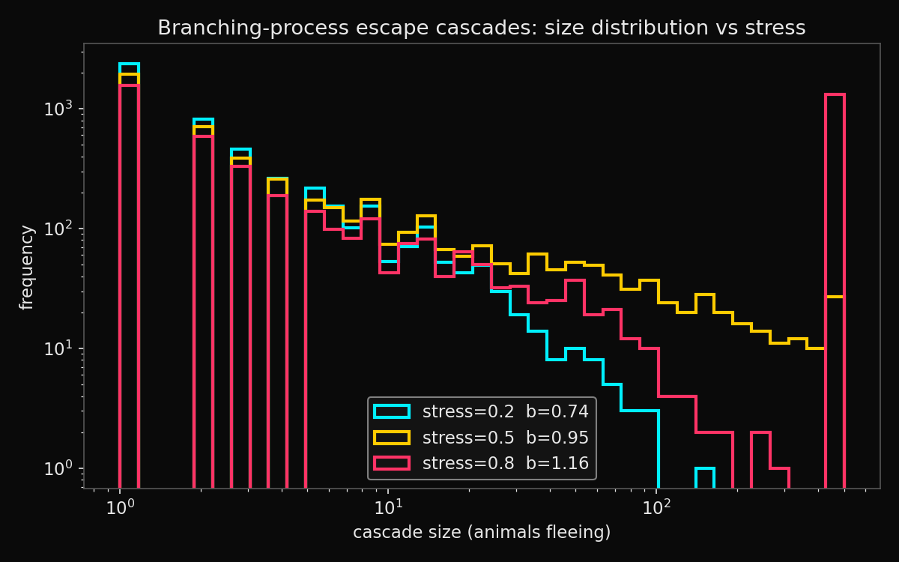

A simulation report on the stampede-as-phase-transition claim
The “Coupled Cattle” paper argues that the CAMS framework — which scores adaptive collectives on Coherence, Capacity, Stress and Abstraction and maps their configuration onto the synchronisation literature in statistical physics via a criticality bridge — finds its cleanest animal testbed in the ungulate herd, and its sharpest diagnostic case in the stampede. The paper draws a careful distinction between two kinds of transition. Ordinary herd cohesion, in which synchrony grows continuously as social coupling rises, is well described as a second-order transition of the kind documented for marching locusts and standard self-propelled-particle models. The stampede, by contrast, is proposed as a first-order or explosive transition: the herd sits in a calm attractor, a shock pushes it discontinuously into a flight attractor, and recovery is slow — the behavioural signature of hysteresis.
That second claim is the one worth attacking, because only it delivers the tipping-point intuition that motivates the framework’s predictive ambition. The review exchange sharpened the attack into a precise methodological worry. If we infer the existence of two attractors from the very phenomenology we are trying to explain — a herd that stays agitated after the stimulus has passed — we risk circularity, because sustained agitation is equally well explained by a stimulus that has not in fact passed (lingering scent, a handler still present) as by genuine bistability. The only way to break the circle is to manipulate the control parameter in both directions and watch whether the system retraces its path.
A second worry was formal rather than empirical. The Kuramoto model describes phase oscillators, and a grazing animal does not obviously have a phase. A graze-to-flee transition is a one-shot threshold event, better suited to an excitable-medium or branching-process description than to a phase model. This argues for running the stampede claim through two formalisms in parallel — a synchronisation model and a contagion model — and asking which fits the cascade more naturally, rather than assuming the synchronisation framing from the outset.
The first model integrates the Kuramoto equations as a stochastic differential equation using an Euler–Maruyama scheme with fixed timestep and noise scaled by the square root of the timestep. To give the model the capacity to exhibit a first-order transition — without which the test would be rigged toward a negative result — the coupling of each oscillator was made proportional to the magnitude of its natural frequency, the standard construction by which explosive synchronisation arises. A uniform-coupling version was run alongside as a control.
The control parameter, global coupling, was swept upward (the forward sweep) and then downward (the backward sweep), with the final state at each step carried forward as the initial condition for the next — an adiabatic sweep, the configuration in which hysteresis, if present, will reveal itself. The enclosed area between the two sweep paths is the quantitative hysteresis measure; a verdict threshold was set in advance so the result could come back negative.
The second model treats an escape cascade as a Galton–Watson branching process: a startled animal recruits a Poisson-distributed number of neighbours, each of whom recruits in turn, with the branching ratio modulated by stress so that low stress is subcritical (cascades die out) and high stress is supercritical (cascades propagate). The cascade was capped at a finite herd size, since a real herd cannot mobilise more animals than it contains — this finite-population saturation is biologically honest and also prevents the supercritical runs from diverging.
On a slow ramp of the branching ratio toward criticality, two standard early-warning indicators were computed: rolling variance and lag-1 autocorrelation. The theory of critical slowing down predicts that both should rise as a system approaches a tipping point — precisely the signatures the paper’s falsification programme proposes to look for in real cattle activity data.

Figure 1. Forward (cyan) and backward (gold) coupling sweeps. Left: explosive coupling (Ki ∝ |ωi|) produces a near-vertical jump and a visible enclosed loop (area 0.20). Right: the uniform-coupling control rises gradually and the two paths nearly coincide (area 0.07). The non-zero control area is a finite-size and finite-relaxation artefact and sets the noise floor against which the explosive loop must be judged.
The explosive model behaved as the first-order hypothesis predicts. The forward sweep held the order parameter low until the coupling reached roughly 1.5 to 2.0, then jumped almost vertically to a high-synchrony branch; the backward sweep descended through an intermediate value, so the two paths enclosed a clear loop. The uniform-coupling control, by contrast, rose gradually and smoothly, its two sweep paths almost coinciding, exactly as a second-order transition should.

Figure 2. Cascade-size distributions at three stress levels (log–log scale). As stress raises the branching ratio across the critical value of one, the distribution develops a heavy tail: small cascades remain the norm but herd-spanning events become non-negligible.
The branching model produced the progression a contagion account predicts. At low stress the branching ratio sat at about 0.74 and cascades died out quickly. As stress rose, the branching ratio crossed one near a stress value of about 0.57, and the cascade-size distribution developed the characteristic heavy tail of a critical branching process.
The divergence between median and mean is the statistical fingerprint of criticality, and it captures the stockman’s intuition more faithfully than any synchronisation curve — most disturbances involve a startle and a couple of animals and nothing more, while a rare disturbance of identical initial size takes the entire herd. A synchronisation order parameter, which describes a global average, does not naturally represent this all-or-nothing-by-luck character; a branching process does.
On the ramp toward criticality, rolling variance tracked proximity to the tipping point with a correlation of about +0.63, while lag-1 autocorrelation tracked it more weakly, at about +0.34. Both are positive, so both early-warning signatures strengthen as predicted, but the asymmetry is the useful result. Autocorrelation is the noisier indicator and would require longer observation windows to firm up. The practical recommendation: lead with variance-based precursors and treat autocorrelation as confirmatory rather than primary.
Three concrete results carry over into the paper. First, the forward/backward sweep should be named explicitly as the decisive, potentially disconfirming test, with the prior commitment that if no hysteresis is found the first-order Kuramoto reading is dropped for stampedes. Second, the criticality bridge should be partitioned by regime: reserved for genuinely oscillatory phenomena such as circadian and feeding–rest cycles, and replaced by branching or excitable-medium metrics for one-shot panic propagation. Third, the precursor analysis should foreground variance over autocorrelation and should pre-register the difficulty of detecting either in short, confounded field records.
All results were generated by a single self-contained script run with fixed random seeds. The known limitations are stated rather than hidden: the system size and relaxation time were constrained by a compute budget (source of the non-zero control loop); the branching model uses a global branching ratio rather than a spatially embedded interaction network; and no real cattle data has yet been analysed. The first two are straightforward to relax with more computation; the third is the substance of the empirical programme the paper proposes.
{kind=link}
{kind=link}